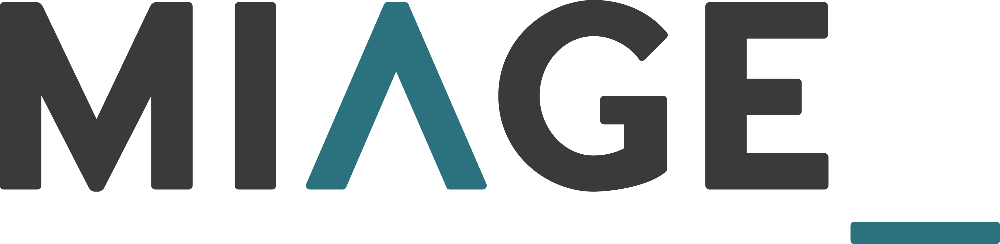

Ma poursuite d'étude


Souhaitant approfondir mes connaissances et me spécialiser davantage, je vise à faire une licence pro Systèmes Informatiques et Logiciels, et je vise un Master 2 (bac+5). Lors de mes études, je souhaite nécessairement réaliser des années en alternance. L'idéal pour moi est de viser une école spécialisée en informatique.
Je souhaite m'orienter vers un Bachelor suivi d'un Mastère en Ingénierie et Architecture des Logiciels dans une école privée comme l'ESGI, ou pourquoi pas continuer en université avec une Licence MIAGE suivie d'un Master MIAGE. Je souhaite idéalement poursuivre mes études vers un Bac+5, et pourquoi pas un Bac+6 si l'opportunité de réaliser un Master spécialisé se présente à moi.
Marché du travail

Je souhaite idéalement m'orienter vers des métiers spécialisés dans le développement logiciel. Je vise des postes tels qu'ingénieur et architecte logiciel, développeur fullstack, ingénieur DevOps, et pourquoi pas devenir Lead Developer. Ces métiers me permettront de mettre à profit mes compétences en programmation, en conception de systèmes complexes et en gestion de projets.
En tant qu'ingénieur et architecte logiciel, je pourrais concevoir et développer des solutions logicielles robustes et évolutives. En tant que développeur fullstack, je serais capable de travailler sur l'ensemble des couches d'une application, du front-end au back-end. En tant qu'ingénieur DevOps, je pourrais améliorer les processus de développement et de déploiement pour garantir une livraison continue et de haute qualité. Enfin, en tant que Lead Developer, je pourrais diriger une équipe de développeurs et contribuer à la réussite des projets en apportant mon expertise technique et en assurant une bonne communication au sein de l'équipe.
Certifications


Je projette de passer des certifications afin de mieux valoriser mon profil et d'acquérir des compétences reconnues par l'industrie. Ces certifications me permettront de démontrer mon expertise et mon engagement envers l'apprentissage continu, ce qui est essentiel dans le domaine de l'informatique.
Voici quelques certifications que je souhaite passer :
- SoloLearn
- Cisco Networking Academy (CCNA & CCNP)
- Microsoft Azure
- Amazon Web Services
- Google Cloud
- OpenClassrooms